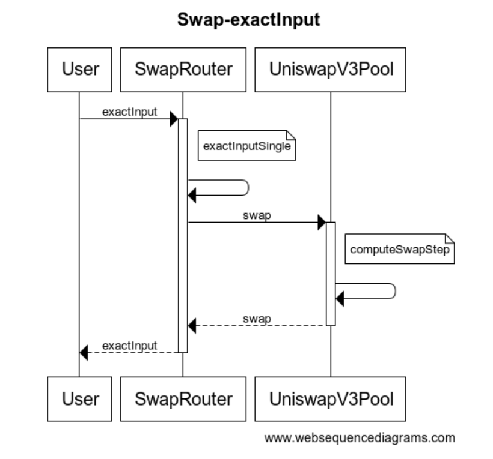
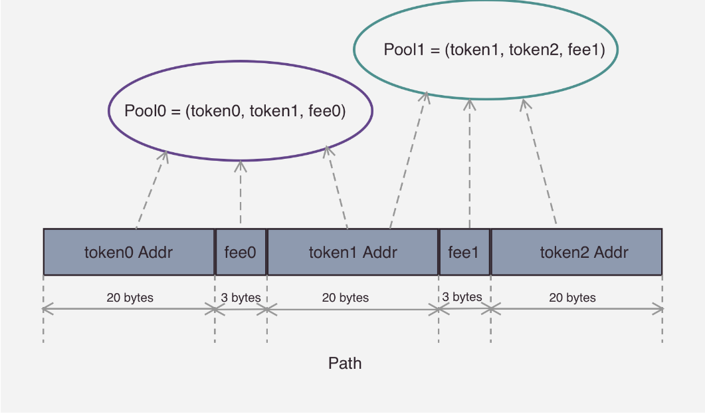

交易过程
V3的UniswapV3Pool 提供了比较底层的交易接口，而在SwapRouter合约中封装了面向用户的交易接口：
exacInput：指定交易路径，付出的 x token 数和预期得到的额最小 y token数（x，y可以互换）exactOutPut: 指定交易路径，付出的x token最大数和预期得到的y token数（x，y可以互换）
这里我们讲解exactInput这个接口，调佣流程如下：

路径选择
在进行两个代币交易室，首先需要在链下计算出交易的路径。
Uniswap的前端会帮助用户实时计算出最优路径（收益最高），作为参数传给合约的调用，前端这部分计算的具体实现在这里
具体过程为先用需要交易的输入代币，输出代币，以及一系列可用的中间代币（代码中交 Base token）生成所有的路径，然后遍历每个路径输出的代币数量，最后选取最佳路径。
事实上因为V3引入了费率的原因，在路径选择的过程中环需要考虑费率的因素，关于交易结果的预计算。
交易入口
交易的入口函数是exacInput 函数，代码如下：
1 | |
这里使用一个循环遍历传入的路径，路径中包含了交易过程中所有的 token，每相邻的两个 token 组成了一个交易对。例如当需要通过 ETH -> USDC -> DAI 路径进行交易时，会经过两个池：ETH/USDC 和 USDC/DAI，最终得到 DAI 代币。如前所述，这里其实还包含了每个交易对所选择的费率。
路径编码/解码
上面输入的参数中 path 字段是 bytes 类型，通过这种类型可以实现更紧凑的编码。Uniswap 会将 bytes 作为一个数组使用，bytes 类型就是一连串的 byte1，但是不会对每一个成员使用一个 word，因此相比普通数组其结构更加紧凑。在 Uniswap V3 中， path 内部编码结构如下图：

图中展示了一个包含 2个路径（pool0, 和 pool1）的 path 编码。Uniswap 将编码解码操作封装在了 Path 库中，本文不再赘述其过程。每次交易时，会取出头部的 tokenIn, tokenOut, fee，使用这三个参数找到对应的交易池，完成交易。
单个池的交易过程
单个池的交易在 exactInputSingle 函数中：1
2
3
4
5
6
7
8
9
10
11
12
13
14
15
16
17
18
19
20
21
22
23
24function exactInputSingle(
uint256 amountIn,
address recipient,
SwapData memory data
) private returns (uint256 amountOut) {
// 将 path 解码，获取头部的 tokenIn, tokenOut, fee
(address tokenIn, address tokenOut, uint24 fee) = data.path.decodeFirstPool();
// 因为交易池只保存了 token x 的价格，这里我们需要知道输入的 token 是交易池 x token 还是 y token
bool zeroForOne = tokenIn < tokenOut;
// 完成交易
(int256 amount0, int256 amount1) =
getPool(tokenIn, tokenOut, fee).swap(
recipient,
zeroForOne,
amountIn.toInt256(),
zeroForOne ? MIN_SQRT_RATIO : MAX_SQRT_RATIO,
// 给回调函数用的参数
abi.encode(data)
);
return uint256(-(zeroForOne ? amount1 : amount0));
}
交易过程就是先获取交易池，然后需要确定本次交易输入的是交易池的 x token, 还是 y token，。最后调用 UniswapV3Pool 的 swap 函数完成交易。
交易分解
UniswapV3Pool.swap 函数比较长，我们逐步拆解Swap函数中的代码:
1 | |
上面的代码都是交易前的准备工作，实际的交易在一个循环中发生：1
2
3
4
5
6
7
8
9
10
11
12
13
14
15
16
17
18
19
20
21
22
23
24
25
26
27
28
29
30
31
32
33
34
35
36
37
38
39
40
41
42
43
44
45
46
47
48
49
50
51
52
53
54
55
56
57
58
59
60
61
62
63
64
65
66
67
68
69// 只要 tokenIn
while (state.amountSpecifiedRemaining != 0 && state.sqrtPriceX96 != sqrtPriceLimitX96) {
// 交易过程每一次循环的状态变量
StepComputations memory step;
// 交易的起始价格
step.sqrtPriceStartX96 = state.sqrtPriceX96;
// 通过位图找到下一个可以选的交易价格，这里可能是下一个流动性的边界，也可能还是在本流动性中
(step.tickNext, step.initialized) = tickBitmap.nextInitializedTickWithinOneWord(
state.tick,
tickSpacing,
zeroForOne
);
...
// 从 tick index 计算 sqrt(price)
step.sqrtPriceNextX96 = TickMath.getSqrtRatioAtTick(step.tickNext);
// 计算当价格到达下一个交易价格时，tokenIn 是否被耗尽，如果被耗尽，则交易结束，还需要重新计算出 tokenIn 耗尽时的价格
// 如果没被耗尽，那么还需要继续进入下一个循环
(state.sqrtPriceX96, step.amountIn, step.amountOut, step.feeAmount) = SwapMath.computeSwapStep(
state.sqrtPriceX96,
(zeroForOne ? step.sqrtPriceNextX96 < sqrtPriceLimitX96 : step.sqrtPriceNextX96 > sqrtPriceLimitX96)
? sqrtPriceLimitX96
: step.sqrtPriceNextX96,
state.liquidity,
state.amountSpecifiedRemaining,
fee
);
// 更新 tokenIn 的余额，以及 tokenOut 数量，注意当指定 tokenIn 的数量进行交易时，这里的 tokenOut 是负数
if (exactInput) {
state.amountSpecifiedRemaining -= (step.amountIn + step.feeAmount).toInt256();
state.amountCalculated = state.amountCalculated.sub(step.amountOut.toInt256());
} else {
state.amountSpecifiedRemaining += step.amountOut.toInt256();
state.amountCalculated = state.amountCalculated.add((step.amountIn + step.feeAmount).toInt256());
}
...
// 按需决定是否需要更新流动性 L 的值
if (state.sqrtPriceX96 == step.sqrtPriceNextX96) {
// 检查 tick index 是否为另一个流动性的边界
if (step.initialized) {
int128 liquidityNet =
ticks.cross(
step.tickNext,
(zeroForOne ? state.feeGrowthGlobalX128 : feeGrowthGlobal0X128),
(zeroForOne ? feeGrowthGlobal1X128 : state.feeGrowthGlobalX128)
);
// 根据价格增加/减少，即向左或向右移动，增加/减少相应的流动性
if (zeroForOne) liquidityNet = -liquidityNet;
secondsOutside.cross(step.tickNext, tickSpacing, cache.blockTimestamp);
// 更新流动性
state.liquidity = LiquidityMath.addDelta(state.liquidity, liquidityNet);
}
// 在这里更 tick 的值，使得下一次循环时让 tickBitmap 进入下一个 word 中查询
state.tick = zeroForOne ? step.tickNext - 1 : step.tickNext;
} else if (state.sqrtPriceX96 != step.sqrtPriceStartX96) {
// 如果 tokenIn 被耗尽，那么计算当前价格对应的 tick
state.tick = TickMath.getTickAtSqrtRatio(state.sqrtPriceX96);
}
}
上面的代码即交易的主循环，实现思路即以一个tickBitmap的word为最大单位，在此单位内计算相同流动性区间的交易数值，如果交易没有完成，那么更新流动性的值，
进入下一个流动性区间计算，如果tick index移动到word编辑，那么进入下一个word。
关于tickBitmap中下一个可用价格tick index的查找，在函数 TickBitmap 中实现，这里不做详细描述。
拆分后的交易计算
易是否能够结束的关键计算在 SwapMath.computeSwapStep 中完成，这里计算了交易是否能在目标价格范围内结束，以及消耗的 tokenIn 和得到的 tokenOut. 这里摘取此函数部分代码进行分析（这里仅摘取 exactIn 时的代码）:
1 | |
函数的输入参数是当前价格、目标价格、当前流动性、以及tokenIn的余额
1 | |
我们接着看 computeSwapStep 的剩余步骤：1
2
3
4
5
6
7
8
9
10
11
12
13
14
15
16
17
18
19
20
21
22
23
24
25
26
27
28
29
30// 判断是否能够到达目标价
bool max = sqrtRatioTargetX96 == sqrtRatioNextX96;
// get the input/output amounts
if (zeroForOne) {
// 根据是否到达目标价格，计算 amountIn/amountOut 的值
amountIn = max && exactIn
? amountIn
: SqrtPriceMath.getAmount0Delta(sqrtRatioNextX96, sqrtRatioCurrentX96, liquidity, true);
amountOut = max && !exactIn
? amountOut
: SqrtPriceMath.getAmount1Delta(sqrtRatioNextX96, sqrtRatioCurrentX96, liquidity, false);
} else {
...
}
// 这里对 Output 进行 cap 是因为前面在计算 amountOut 时，有可能会使用 sqrtRatioNextX96 来进行计算，而 sqrtRatioNextX96
// 可能被 Round 之后导致 sqrt_P 偏大，从而导致计算的 amountOut 偏大
if (!exactIn && amountOut > uint256(-amountRemaining)) {
amountOut = uint256(-amountRemaining);
}
if (exactIn && sqrtRatioNextX96 != sqrtRatioTargetX96) {
// 如果没能到达目标价，即交易结束，剩余的 tokenIn 将全部作为手续费
// 为了不让计算进一步复杂化，这里直接将剩余的 tokenIn 将全部作为手续费
// 因此会多收取一部分手续费，即按本次交易的最大手续费收取
feeAmount = uint256(amountRemaining) - amountIn;
} else {
feeAmount = FullMath.mulDivRoundingUp(amountIn, feePips, 1e6 - feePips);
}
后续的步骤即重新计算了需要支付的手续费用和付出的tokenIn, tokenOut 数量，这一步的交易就结束了，函数会将手续费，到达的目标价以及 tokenIn, tokenOut 返回。
交易收尾阶段
关于手续费，预言机的相关内容，会在其他章节讲解，我们先跳过这部分代码，直接看 swap 函数的末尾：1
2
3
4
5
6
7
8
9
10
11
12
13
14
15
16
17
18
19
20
21
22
23
24// 确定最终用户支付的 token 数和得到的 token 数
(amount0, amount1) = zeroForOne == exactInput
? (amountSpecified - state.amountSpecifiedRemaining, state.amountCalculated)
: (state.amountCalculated, amountSpecified - state.amountSpecifiedRemaining);
// 扣除用户需要支付的 token
if (zeroForOne) {
// 将 tokenOut 支付给用户，前面说过 tokenOut 记录的是负数
if (amount1 < 0) TransferHelper.safeTransfer(token1, recipient, uint256(-amount1));
uint256 balance0Before = balance0();
// 还是通过回调的方式，扣除用户需要支持的 token
IUniswapV3SwapCallback(msg.sender).uniswapV3SwapCallback(amount0, amount1, data);
// 校验扣除是否成功
require(balance0Before.add(uint256(amount0)) <= balance0(), 'IIA');
} else {
...
}
// 记录日志
emit Swap(msg.sender, recipient, amount0, amount1, state.sqrtPriceX96, state.tick);
// 解除防止重入的锁
slot0.unlocked = true;
}
这里还是通过回调完成用户支付token费用，因为发送用户token时再回调函数之前完成的，因此这个Swap函数是可以被当做flash swap来使用的。
If you like this blog or find it useful for you, you are welcome to comment on it. You are also welcome to share this blog, so that more people can participate in it. If the images used in the blog infringe your copyright, please contact the author to delete them. Thank you !